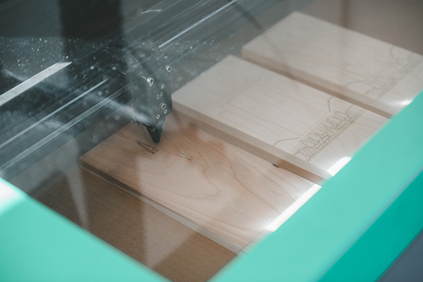

Hi! My name is Michel Domenella.
I am a product development engineer who has industry and academic experience at all stages of the product design process - from ideation and prototyping to manufacturing and post-launch support. My passion for design lies in creating intentional, meaningful, and tactile interactions that help to improve the quality of people's lives. Most recently I accomplished this during my time at Clippard, more on that below, but it has been something that I have pursued throughout my years at work and school. I am currently looking for an internship for the summer of 2026 and would love to chat more about that if you think I would be a good fit!


New Product Development at Clippard Inc.
My time at Clippard has led to a marked improvement in my skills as an engineer and my understanding of myself as a designer. The following projects best exemplify my work during my time at Clippard:
The panel mounted pinch valve was one of the first projects that I worked on and was a great first step into the learning how to design for manufacturing. While not technically challenging, the project was a great exercise in redesigning a product to deliver the same specifications while improving ease of use for a majority of customers. The oxygen blender for an open care baby warmer was much more technically challenging as a result of the many moving parts as well as the strict safety regulations. Since the product was intended for infants it also helped me to realize how much I valued being a part of a project that truly makes a difference in people's lives. Finally, working on the long stroke pinch valve was a fantastic opportunity to gain experience with the post-launch support of a project. With changing customer requirements and other issues, the importance of rigorous testing and extensive record keeping was made very clear.
Other Experience
Throughout my undergrad degree at Notre Dame I worked as a fabricator for the Notre Dame Innovation Lab. My time here gave me much greater exposure to tools such as a laser cutter and 3D printer as well as the various stages of the design process. While there I interacted with local business owners to help them bring their ideas to life which was essential to my development as a designer.

About Me
Outside of work I have found a ton of joy in staying creative, volunteering at dog shelters, and pushing myself to be the best that I can be. Recently, my favorite creative outlet has been film photography. Last year I started an Instagram account (@domenella_film) where I posted once a week for a year, documenting the architecture and landscape of Cincinnati. Since November of last year I have been spending a night or two a week taking care of all different types of dogs at dog shelters. Physically challenging myself is another way in which I push myself to be the best that I can be - whether its hiking, rock climbing, or playing ultimate frisbee.


Contact Me
Please reach out with any opportunities or questions you might have. I have also included my resumé below for a more concise view of my skills and experiences.